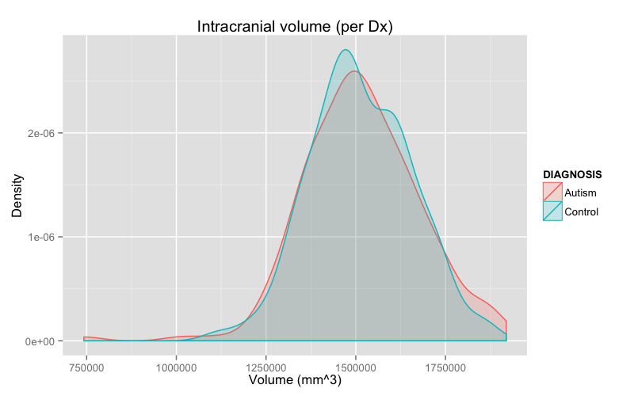
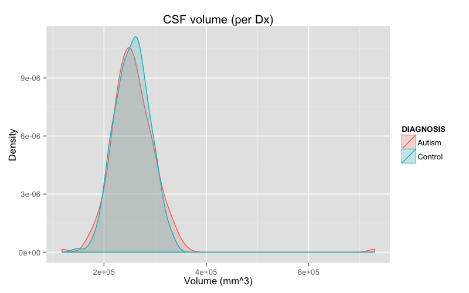

ABIDE data
Nick Tustison
November 23, 2014
Demographics
Preprocessing: subset and matching
results <- read.csv( './Data/labelresultsAnts.csv' )
resultsSubset <- results[which( results$gender == 1 & results$age >= 6 & results$age <= 35 & results$handedness == 'R' ),]
drops <- c( "area.5th.ventricle", "area.left.lesion", "area.right.lesion", "area.left.vessel", "area.right.vessel", "area.optic.chiasm",
"volume.5th.ventricle", "volume.left.lesion", "volume.right.lesion", "volume.left.vessel", "volume.right.vessel", "volume.optic.chiasm" )
resultsSubset <- resultsSubset[, !( names( resultsSubset ) %in% drops )]
# match the data based on age and fiq
library( MatchIt )## Loading required package: MASSresultsDf <- data.frame( subject.id = resultsSubset$subject.id,
dx.group = resultsSubset$dx.group,
age = resultsSubset$age,
fiq = resultsSubset$fiq
)
resultsDf$dx.group <- as.numeric( resultsDf$dx.group ) - 1
resultsDf <- na.omit( resultsDf )
resultsDf <- match.data( matchit( dx.group ~ age + fiq, data = resultsDf, method = "nearest", discard = "both" ) )## Warning: Fewer control than treated units and matching without
## replacement. Not all treated units will receive a match. Treated units
## will be matched in the order specified by m.order: largestresultsMatched <- resultsSubset[which( is.element( resultsSubset$subject.id, resultsDf$subject.id ) ), ]
write.csv( resultsMatched, './Data/labelresultsANTsSubset.csv', quote = FALSE, row.names = FALSE )All sites
Total number of studies = 450
males = 450, females = 0
autism = 225, controls = 225
rights = 450, lefts = 0, ambis = 0
Age distribution

Gross results
Brain volume distribution

CSF volume distribution

Gray matter volume distribution

White matter volume distribution

Deep gray matter volume distribution

Total mean thickness distribution

Per site demographics
Site demographics
CALTECH: n = 11 (males = 11, females = 0)
CMU: n = 15 (males = 15, females = 0)
KKI: n = 27 (males = 27, females = 0)
LEUVEN_1: n = 25 (males = 25, females = 0)
MAX_MUN: n = 38 (males = 38, females = 0)
OHSU: n = 19 (males = 19, females = 0)
OLIN: n = 22 (males = 22, females = 0)
PITT: n = 36 (males = 36, females = 0)
SDSU: n = 22 (males = 22, females = 0)
STANFORD: n = 18 (males = 18, females = 0)
Site demographics (continued)
TRINITY: n = 43 (males = 43, females = 0)
UCLA_1: n = 53 (males = 53, females = 0)
UCLA_2: n = 18 (males = 18, females = 0)
UM_1: n = 50 (males = 50, females = 0)
UM_2: n = 27 (males = 27, females = 0)
YALE: n = 26 (males = 26, females = 0)
Age

Per site gross results
Brain volume

CSF volume

Gray matter volume

White matter volume

Deep gray matter volume

Total mean thickness

Paper results
Results: Intracranial volume
All site results: Intracranial volume
library( xtable )
results <- read.csv( './Data/labelresultsAntsSubset.csv' )
fit <- aov( total.volume ~ dx.group + site + age + fiq, data = results )
print( xtable( anova( fit ) ), type = "html" )| Df | Sum Sq | Mean Sq | F value | Pr(>F) | |
|---|---|---|---|---|---|
| dx.group | 1 | 635506407.47 | 635506407.47 | 0.04 | 0.8445 |
| site | 15 | 2744732545213.81 | 182982169680.92 | 11.09 | 0.0000 |
| age | 1 | 454992242535.23 | 454992242535.23 | 27.58 | 0.0000 |
| fiq | 1 | 2332337220.80 | 2332337220.80 | 0.14 | 0.7071 |
| Residuals | 431 | 7111246085396.22 | 16499410870.99 |
Per site results: Intracranial volume
total.volume ~ dx.group + age + fiq
| site | dx.Pvalue | age.Pvalue | fiq.Pvalue |
|---|---|---|---|
| CALTECH | 0.18 | 0.17 | 0.58 |
| CMU | 0.74 | 0.94 | 0.85 |
| KKI | 0.55 | 0.13 | 0.08 |
| LEUVEN_1 | 0.93 | 0.26 | 0.26 |
| MAX_MUN | 0.36 | 0.10 | 0.79 |
| OHSU | 0.59 | 0.22 | 0.55 |
| OLIN | 0.34 | 0.01 | 0.85 |
| PITT | 0.46 | 0.38 | 0.75 |
Per site results (cont.): Intracranial volume
total.volume ~ dx.group + age + fiq
| site | dx.Pvalue | age.Pvalue | fiq.Pvalue |
|---|---|---|---|
| SDSU | 0.03 | 0.01 | 0.97 |
| STANFORD | 0.08 | 0.80 | 0.57 |
| TRINITY | 0.73 | 0.35 | 0.25 |
| UCLA_1 | 0.23 | 0.18 | 0.10 |
| UCLA_2 | 0.51 | 0.39 | 0.03 |
| UM_1 | 0.11 | 0.00 | 0.06 |
| UM_2 | 0.90 | 0.69 | 0.98 |
| YALE | 0.18 | 0.00 | 0.09 |
Results: Amygdala volume
All site results: Amygdala volume (right)
library( xtable )
results <- read.csv( './Data/labelresultsAntsSubset.csv' )
fit <- aov( volume.right.amygdala ~ dx.group + site + age + fiq, data = results )
print( xtable( anova( fit ) ), type = "html" )| Df | Sum Sq | Mean Sq | F value | Pr(>F) | |
|---|---|---|---|---|---|
| dx.group | 1 | 27789.06 | 27789.06 | 2.20 | 0.1391 |
| site | 15 | 1635102.05 | 109006.80 | 8.61 | 0.0000 |
| age | 1 | 387099.58 | 387099.58 | 30.59 | 0.0000 |
| fiq | 1 | 3068.90 | 3068.90 | 0.24 | 0.6227 |
| Residuals | 431 | 5454667.73 | 12655.84 |
Per site results: Amygdala volume (right)
volume.right.amygdala ~ dx.group + age + fiq
| site | dx.Pvalue | age.Pvalue | fiq.Pvalue |
|---|---|---|---|
| CALTECH | 0.56 | 0.13 | 0.77 |
| CMU | 0.88 | 0.44 | 0.37 |
| KKI | 0.91 | 0.05 | 0.40 |
| LEUVEN_1 | 0.21 | 0.21 | 0.86 |
| MAX_MUN | 0.65 | 0.01 | 0.96 |
| OHSU | 0.85 | 0.06 | 0.61 |
| OLIN | 0.78 | 0.04 | 0.18 |
| PITT | 0.51 | 0.18 | 0.55 |
Per site results (cont.): Amygdala volume (right)
volume.right.amygdala ~ dx.group + age + fiq
| site | dx.Pvalue | age.Pvalue | fiq.Pvalue |
|---|---|---|---|
| SDSU | 0.77 | 0.03 | 0.22 |
| STANFORD | 0.66 | 0.68 | 0.68 |
| TRINITY | 0.40 | 0.66 | 0.49 |
| UCLA_1 | 0.00 | 0.20 | 0.03 |
| UCLA_2 | 0.49 | 0.03 | 0.26 |
| UM_1 | 0.99 | 0.06 | 0.54 |
| UM_2 | 0.59 | 0.14 | 0.42 |
| YALE | 0.10 | 0.04 | 0.39 |
All site results: Amygdala volume (left)
library( xtable )
results <- read.csv( './Data/labelresultsAntsSubset.csv' )
fit <- aov( volume.left.amygdala ~ dx.group + site + age + fiq, data = results )
print( xtable( anova( fit ) ), type = "html" )| Df | Sum Sq | Mean Sq | F value | Pr(>F) | |
|---|---|---|---|---|---|
| dx.group | 1 | 16020.28 | 16020.28 | 1.16 | 0.2814 |
| site | 15 | 1602296.82 | 106819.79 | 7.76 | 0.0000 |
| age | 1 | 307290.75 | 307290.75 | 22.31 | 0.0000 |
| fiq | 1 | 5151.07 | 5151.07 | 0.37 | 0.5412 |
| Residuals | 431 | 5936259.02 | 13773.22 |
Per site results: Amygdala volume (left)
volume.left.amygdala ~ dx.group + age + fiq
| site | dx.Pvalue | age.Pvalue | fiq.Pvalue |
|---|---|---|---|
| CALTECH | 0.38 | 0.21 | 0.44 |
| CMU | 0.52 | 0.69 | 0.76 |
| KKI | 0.83 | 0.18 | 0.49 |
| LEUVEN_1 | 0.42 | 0.80 | 0.95 |
| MAX_MUN | 0.36 | 0.01 | 0.97 |
| OHSU | 0.38 | 0.30 | 0.80 |
| OLIN | 0.43 | 0.06 | 0.33 |
| PITT | 0.45 | 0.32 | 0.46 |
Per site results (cont.): Amygdala volume (left)
volume.left.amygdala ~ dx.group + age + fiq
| site | dx.Pvalue | age.Pvalue | fiq.Pvalue |
|---|---|---|---|
| SDSU | 0.21 | 0.09 | 0.73 |
| STANFORD | 0.09 | 0.08 | 0.63 |
| TRINITY | 0.35 | 0.26 | 0.55 |
| UCLA_1 | 0.45 | 0.02 | 0.13 |
| UCLA_2 | 0.62 | 0.26 | 0.27 |
| UM_1 | 0.80 | 0.00 | 0.05 |
| UM_2 | 0.07 | 0.38 | 0.95 |
| YALE | 0.24 | 0.01 | 0.48 |
Results: CSF volume
All sites: CSF volume
library( xtable )
results <- read.csv( './Data/labelresultsAntsSubset.csv' )
fit <- aov( csf.volume ~ dx.group + site + age + fiq, data = results )
print( xtable( anova( fit ) ), type = "html" )| Df | Sum Sq | Mean Sq | F value | Pr(>F) | |
|---|---|---|---|---|---|
| dx.group | 1 | 614627510.94 | 614627510.94 | 0.50 | 0.4808 |
| site | 15 | 174831189871.42 | 11655412658.09 | 9.44 | 0.0000 |
| age | 1 | 85957057583.14 | 85957057583.14 | 69.62 | 0.0000 |
| fiq | 1 | 253881444.90 | 253881444.90 | 0.21 | 0.6504 |
| Residuals | 431 | 532118740766.49 | 1234614247.72 |
Per site results: CSF volume
csf.volume ~ dx.group + age + fiq
| site | dx.Pvalue | age.Pvalue | fiq.Pvalue |
|---|---|---|---|
| CALTECH | 0.52 | 0.07 | 0.66 |
| CMU | 0.33 | 0.40 | 0.91 |
| KKI | 0.78 | 0.72 | 0.05 |
| LEUVEN_1 | 0.75 | 0.05 | 0.22 |
| MAX_MUN | 0.21 | 0.00 | 0.97 |
| OHSU | 0.54 | 0.12 | 0.54 |
| OLIN | 0.11 | 0.00 | 0.98 |
| PITT | 0.81 | 0.00 | 0.80 |
Per site results (cont.): CSF volume
csf.volume ~ dx.group + age + fiq
| site | dx.Pvalue | age.Pvalue | fiq.Pvalue |
|---|---|---|---|
| SDSU | 0.02 | 0.00 | 0.43 |
| STANFORD | 0.15 | 0.95 | 0.84 |
| TRINITY | 0.34 | 0.00 | 0.37 |
| UCLA_1 | 0.54 | 0.05 | 0.10 |
| UCLA_2 | 0.73 | 0.33 | 0.05 |
| UM_1 | 0.30 | 0.00 | 0.01 |
| UM_2 | 0.86 | 0.34 | 0.47 |
| YALE | 0.69 | 0.00 | 0.93 |
Results: Gray matter volume
All sites: Gray matter volume
library( xtable )
results <- read.csv( './Data/labelresultsAntsSubset.csv' )
fit <- aov( gray.matter.volume ~ dx.group + site + age + fiq, data = results )
print( xtable( anova( fit ) ), type = "html" )| Df | Sum Sq | Mean Sq | F value | Pr(>F) | |
|---|---|---|---|---|---|
| dx.group | 1 | 50521.73 | 50521.73 | 0.00 | 0.9971 |
| site | 15 | 537930385772.23 | 35862025718.15 | 9.13 | 0.0000 |
| age | 1 | 178841055.47 | 178841055.47 | 0.05 | 0.8311 |
| fiq | 1 | 12633668.06 | 12633668.06 | 0.00 | 0.9548 |
| Residuals | 431 | 1692807038204.71 | 3927626538.76 |
Per site results: Gray matter volume
gray.matter.volume ~ dx.group + age + fiq
| site | dx.Pvalue | age.Pvalue | fiq.Pvalue |
|---|---|---|---|
| CALTECH | 0.13 | 0.63 | 0.73 |
| CMU | 0.98 | 0.70 | 0.93 |
| KKI | 0.33 | 0.72 | 0.32 |
| LEUVEN_1 | 0.92 | 1.00 | 0.23 |
| MAX_MUN | 0.66 | 0.68 | 0.74 |
| OHSU | 0.28 | 0.43 | 0.49 |
| OLIN | 0.27 | 0.18 | 0.98 |
| PITT | 0.30 | 0.21 | 0.83 |
Per site results (cont.): Gray matter volume
gray.matter.volume ~ dx.group + age + fiq
| site | dx.Pvalue | age.Pvalue | fiq.Pvalue |
|---|---|---|---|
| SDSU | 0.06 | 0.22 | 0.68 |
| STANFORD | 0.05 | 0.89 | 0.60 |
| TRINITY | 0.90 | 0.42 | 0.35 |
| UCLA_1 | 0.23 | 0.41 | 0.12 |
| UCLA_2 | 0.51 | 0.10 | 0.06 |
| UM_1 | 0.14 | 0.02 | 0.20 |
| UM_2 | 0.99 | 0.86 | 0.63 |
| YALE | 0.18 | 0.07 | 0.04 |
Results: White matter volume
All sites: White matter volume
library( xtable )
results <- read.csv( './Data/labelresultsAntsSubset.csv' )
fit <- aov( white.matter.volume ~ dx.group + site + age + fiq, data = results )
print( xtable( anova( fit ) ), type = "html" )| Df | Sum Sq | Mean Sq | F value | Pr(>F) | |
|---|---|---|---|---|---|
| dx.group | 1 | 30934356.06 | 30934356.06 | 0.02 | 0.9002 |
| site | 15 | 329596906415.16 | 21973127094.34 | 11.19 | 0.0000 |
| age | 1 | 71081230366.45 | 71081230366.45 | 36.19 | 0.0000 |
| fiq | 1 | 455050833.05 | 455050833.05 | 0.23 | 0.6305 |
| Residuals | 431 | 846531930532.55 | 1964111207.73 |
Per site results: White matter volume
white.matter.volume ~ dx.group + age + fiq
| site | dx.Pvalue | age.Pvalue | fiq.Pvalue |
|---|---|---|---|
| CALTECH | 0.14 | 0.10 | 0.45 |
| CMU | 0.80 | 0.64 | 0.79 |
| KKI | 0.58 | 0.27 | 0.03 |
| LEUVEN_1 | 0.74 | 0.11 | 0.31 |
| MAX_MUN | 0.20 | 0.01 | 0.85 |
| OHSU | 0.41 | 0.24 | 0.58 |
| OLIN | 0.82 | 0.04 | 0.87 |
| PITT | 0.37 | 0.10 | 0.66 |
Per site results (cont.): White matter volume
white.matter.volume ~ dx.group + age + fiq
| site | dx.Pvalue | age.Pvalue | fiq.Pvalue |
|---|---|---|---|
| SDSU | 0.05 | 0.01 | 0.86 |
| STANFORD | 0.09 | 0.25 | 0.99 |
| TRINITY | 0.63 | 0.24 | 0.26 |
| UCLA_1 | 0.25 | 0.34 | 0.50 |
| UCLA_2 | 0.86 | 0.75 | 0.07 |
| UM_1 | 0.12 | 0.00 | 0.26 |
| UM_2 | 0.78 | 0.75 | 1.00 |
| YALE | 0.20 | 0.01 | 0.05 |
Results: Deep gray matter volume
All sites: Deep gray matter volume
library( xtable )
results <- read.csv( './Data/labelresultsAntsSubset.csv' )
fit <- aov( deep.gray.matter.volume ~ dx.group + site + age + fiq, data = results )
print( xtable( anova( fit ) ), type = "html" )| Df | Sum Sq | Mean Sq | F value | Pr(>F) | |
|---|---|---|---|---|---|
| dx.group | 1 | 4239503.15 | 4239503.15 | 0.24 | 0.6277 |
| site | 15 | 603085508.77 | 40205700.58 | 2.23 | 0.0051 |
| age | 1 | 378605809.44 | 378605809.44 | 21.04 | 0.0000 |
| fiq | 1 | 11451993.28 | 11451993.28 | 0.64 | 0.4255 |
| Residuals | 431 | 7757010099.65 | 17997703.25 |
Per site results: Deep gray matter volume
deep.gray.matter.volume ~ dx.group + age + fiq
| site | dx.Pvalue | age.Pvalue | fiq.Pvalue |
|---|---|---|---|
| CALTECH | 0.56 | 0.03 | 0.38 |
| CMU | 0.98 | 0.86 | 0.92 |
| KKI | 0.40 | 0.43 | 0.30 |
| LEUVEN_1 | 0.58 | 0.14 | 0.90 |
| MAX_MUN | 0.47 | 0.01 | 0.82 |
| OHSU | 0.90 | 0.71 | 0.15 |
| OLIN | 0.46 | 0.01 | 0.76 |
| PITT | 0.83 | 0.93 | 0.47 |
Per site results (cont.): Deep gray matter volume
deep.gray.matter.volume ~ dx.group + age + fiq
| site | dx.Pvalue | age.Pvalue | fiq.Pvalue |
|---|---|---|---|
| SDSU | 0.30 | 0.04 | 0.83 |
| STANFORD | 0.02 | 0.13 | 0.06 |
| TRINITY | 0.28 | 0.81 | 0.05 |
| UCLA_1 | 0.32 | 0.73 | 0.11 |
| UCLA_2 | 0.99 | 0.80 | 0.48 |
| UM_1 | 0.03 | 0.00 | 0.01 |
| UM_2 | 0.92 | 0.81 | 1.00 |
| YALE | 0.01 | 0.32 | 0.47 |
Results: Total mean thickness
All sites: Total mean thickness
library( xtable )
results <- read.csv( './Data/labelresultsAntsSubset.csv' )
fit <- aov( total.mean.thickness ~ dx.group + site + age + fiq, data = results )
print( xtable( anova( fit ) ), type = "html" )| Df | Sum Sq | Mean Sq | F value | Pr(>F) | |
|---|---|---|---|---|---|
| dx.group | 1 | 0.11 | 0.11 | 3.20 | 0.0742 |
| site | 15 | 14.56 | 0.97 | 27.69 | 0.0000 |
| age | 1 | 1.48 | 1.48 | 42.29 | 0.0000 |
| fiq | 1 | 0.01 | 0.01 | 0.43 | 0.5136 |
| Residuals | 431 | 15.10 | 0.04 |
Per site results: Total mean thickness
total.mean.thickness ~ dx.group + age + fiq
| site | dx.Pvalue | age.Pvalue | fiq.Pvalue |
|---|---|---|---|
| CALTECH | 0.28 | 0.67 | 0.44 |
| CMU | 0.49 | 0.24 | 0.05 |
| KKI | 0.73 | 0.85 | 0.16 |
| LEUVEN_1 | 0.17 | 0.15 | 0.76 |
| MAX_MUN | 0.35 | 0.00 | 0.65 |
| OHSU | 0.19 | 0.50 | 0.67 |
| OLIN | 0.50 | 0.00 | 0.48 |
| PITT | 0.10 | 0.02 | 0.81 |
Per site results (cont.): Total mean thickness
total.mean.thickness ~ dx.group + age + fiq
| site | dx.Pvalue | age.Pvalue | fiq.Pvalue |
|---|---|---|---|
| SDSU | 0.91 | 0.53 | 0.42 |
| STANFORD | 0.63 | 0.56 | 0.33 |
| TRINITY | 0.24 | 0.22 | 0.98 |
| UCLA_1 | 0.49 | 0.58 | 0.27 |
| UCLA_2 | 0.35 | 0.01 | 0.33 |
| UM_1 | 0.05 | 0.03 | 0.06 |
| UM_2 | 0.94 | 0.38 | 0.47 |
| YALE | 0.77 | 0.16 | 0.31 |